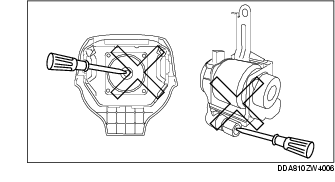

Service cautions
Air Bag System Component Disassembly
• Disassembling the air bag system components could cause it to not operate (deploy) normally. Never disassemble any air bag system components.

Air Bag Module, Pre-tensioner Seat Belt Handling
• Oil, grease, or water on the air bag modules may cause the air bags and pre-tensioner seat belts to fail to operate (deploy) in an accident. Never allow oil, grease, or water to get on the air bag modules or pre-tensioner seat belts.
• Inserting a screwdriver or similar object into the connector of an air bag module or a pre-tensioner seat belt may damage the connector and cause the air bag module or the pre-tensioner seat belt to operate (deploy) improperly, which may cause serious injury. Never insert any foreign objects into the air bag module or seat belt connectors.

Air Bag Module, Pre-tensioner Seat Belt Reuse
• Even if an air bag module or a pre-tensioner seat belt does not operate (deploy) in a collision and does not have any external signs of damage, it may have been damaged internally, which may cause improper operation. Before reusing a live (undeployed) air bag module and the pre-tensioner seat belts, always use the on-board diagnostic to diagnose the air bag module and the pre-tensioner seat belts to verify that they have no malfunction.
Air Bag Wiring Harness Repair
• Incorrectly repairing an air bag wiring harness can accidentally operate (deploy) the air bag module and pre-tensioner seat belts. If a problem is found in the air bag wiring harness, always replace the wiring harness with a new one.